Rally Together
Women’s March
Women’s March is committed to dismantling systems of oppression through nonviolent resistance and building inclusive structures guided by self-determination, dignity and respect.
Date: January 20, 2019Rise Up Fight Back

A counter protest against the “Unite the Right ll”. This protest unites people to participate to take action against white supremacy, fascism, and state violence.
Date: August 12, 2018Indivisible MARCH Concord
The purpose of the INDIVISIBLE MARCH is to celebrate Women’s Equality Day on August 26th, 2017, as we start the countdown to the 100th Anniversary of the 19th Amendment in 2020 and organize our resistance efforts more effectively as we unify the accomplishments of more than 5,982 registered Indivisible Groups in the United States of America.
Date: August 26, 2018